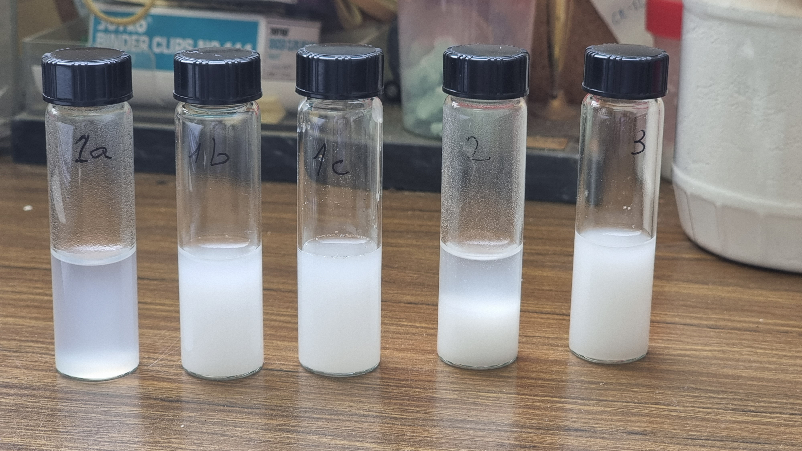
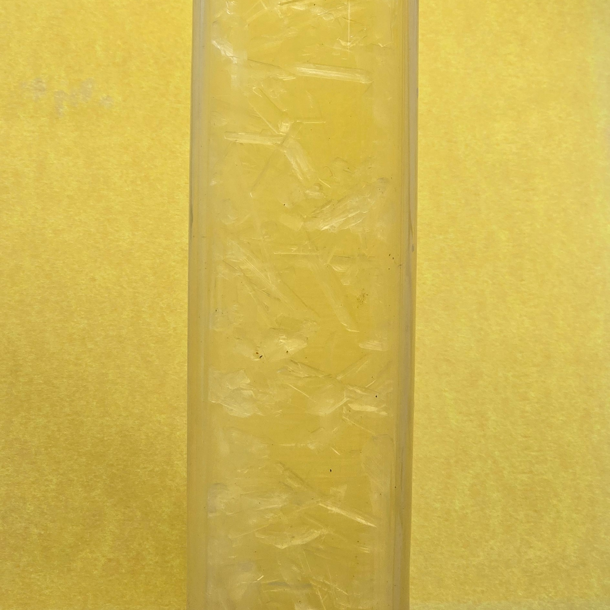

כותרת של שקופית
כותרת של שקופית
- נקודה ראשונה להסבר
- נקודה שנייה – אותו גודל, אותה מסגרת
- אפשר גם טקסט חופשי בלי bullets
- תמונה עם קוד inline דרך base64

דוגמה עם תמונה ריבועית
כאן אפשר לכתוב טקסט רציף בפסקה אחת, והוא עדיין יישאר בתוך המסגרת.
אם תרצה bullets, פשוט תחליף ל־<ul>.

Картинка пошире, текст поуже
- Здесь текстовая рамка уже
- У визуальной рамки больше ширина
- Никаких колонок и fr — только px
- כאן המסגרת של הטקסט יותר צרה
- והמסגרת של התמונה יותר רחבה
- את כל המספרים משנים ישירות ב־style